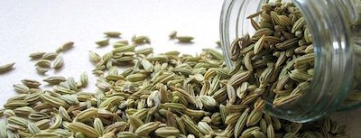

Fennel and Anise was founded in 2007 by brothers Leo and Jacob
Flam. We aspired to bring you the subtle flavors of both fennel and
anise - it's our speciality! Both flowering plants share the organic
compound Anethole, which many will recognize as the flavor that 'tastes
like licorice'. However, fennel and anise can be much more subtle than
licorice, due to licorice containing glycyrrhizin, a natural sweetener
similar in taste to saccharin, a common artificial sweetener. We've
found over the years that Anethole by itself can be used to add a little
something extra to everything from salmon to sourdough. From our humble
beginnings, we've grown in popularity but still manage to bring you that
same great taste you love - and remind you that Anethole can actually
taste good!